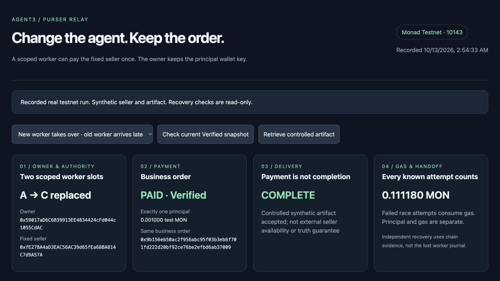

Monad Testnet · Research prototype
Change the agent.
Keep control of the money.
A replacement AI executor needs to know whether the same task was already paid. Purser Relay keeps a fixed seller, amount and request under one permanent intent, while the owner can replace a restricted worker without sharing the principal wallet key.
Inspect the recorded testnet run
This public page is a read-only presentation. It does not connect a wallet, sign a transaction or execute a payment. The workbench screenshot and demo show recorded real testnet payment evidence with a controlled synthetic seller and report artifact.
One order. Scoped worker permissions.
The owner prepays an immutable native-MON order. Two restricted workers compete; the first allowed consume pays its fixed seller once. Atomic worker replacement seals the old address. A late transaction reverts and still spends its worker's gas.

Recover evidence, never blindly repay
A separately started worker recovers payment after the paying worker is killed, without its journal or principal key. Payment and delivery are separate: a missing artifact stays undelivered. The verifier checks actual WebSocket Verified observations, receipt/event, exact order terms and canonical ancestry.
Recovery is bounded to 256 ancestor headers and available historical state. Missing, contradictory or out-of-range evidence stays UNKNOWN, with human handoff and no automatic new payment. This trusts RPC/WebSocket sources, not a light-client proof. Controlled schema acceptance is not an external factual-quality guarantee. No verified production customers, revenue or TPS advantage.
Built on Monad
Chain ID: 10143 · Native test MON
Contract: 0xae6545e105f4b852f74f949b7107928d2db9db01
Purser existed before this build. This Metropolis implementation adds immutable-intent MON escrow, owner-only active-worker replacement, permanent tombstones, independent signer journals and actual Verified chain reconciliation. Codex AI assistance supported implementation, testing, documentation and presentation. See the repository for disclosures, build-window history and reproducible tests.